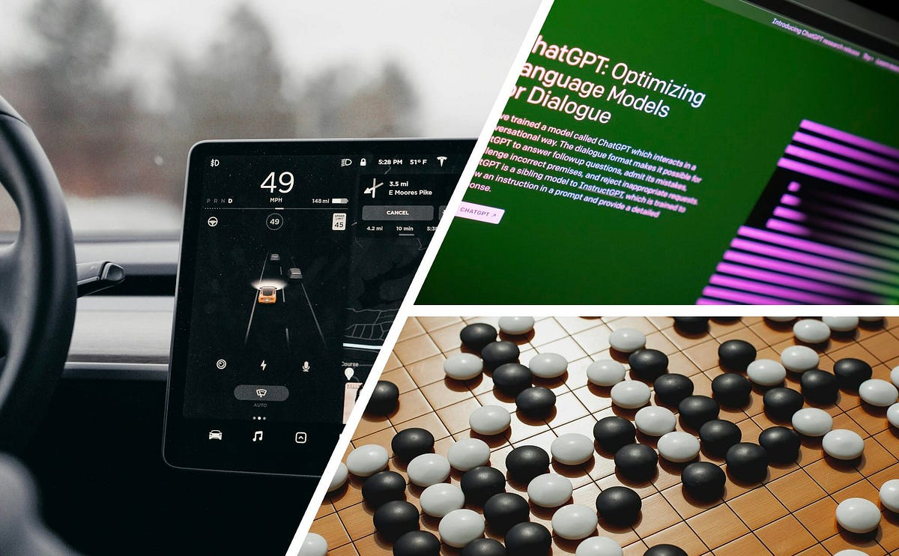

本記事は、自動運転企業でシニアエンジニアを務めるPatrick Langechuan Liuによるブログ投稿であり、知覚（Perception）を専門とするエンジニアに向けてプランニングの基礎を丁寧に解説する入門ガイドである。著者は、機械学習一辺倒のアプローチだけでなく古典的なプランニング手法を理解することが、自動運転開発において重要だと主張する。
プランニングシステムは安全性・快適性・効率性という三つの目標のバランスを取る必要がある。著者はプランニングを「高次元の初期状態から出発し、制約を満たしつつリアルタイムで軌跡を生成する問題」として定式化する。
記事はまず、しばしば混同される用語を整理する。行動プランニング（Behavior Planning） はセマンティクスな意思決定を指し、モーションプランニング（Motion Planning） は軌跡生成を指す。著者は「プランニングはいまだ活発に研究されており、完全には収束していない」と述べている。
ダイクストラ法からA*、そして車両の運動学的制約を取り込んだHybrid A*へと発展してきた探索ベースの手法。
パラメータ化された解空間を使うアプローチ。ジャークを最小化するための5次多項式を例として解説している。
リアルタイム制約に対して凸問題として解くことが望ましい。行動プランニングがモーションプランニング向けの凸解空間を生成するという設計思想が示されている。
曲がった道路をまっすぐな「トンネルモデル」に変換する フレネ座標 は、構造化道路での横方向・縦方向の分離を実用的にする。一方、駐車場のような非構造化環境にはデカルト座標系が適している。
Baidu ApolloのEMプランナーは問題を2つの2D最適化に分解し、動的計画法（DP）に続く二次計画法（QP）で解く手法を採用している。
複雑な相互作用（狭路でのすれ違いなど）には、より複雑だが表現力の高い時空間統合プランニングが必要になる。
著者は、インタラクション（他の交通参加者との相互作用）こそが自動運転を他のロボティクスと区別する最大の特徴だと強調する。古典的な「予測してからプランニング」のアプローチは過度に保守的な行動を生み出す。これに対して以下のフレームワークが紹介されている。
著者はニューラルネットワークがプランニングを以下の点で強化すると論じている。
ただし著者は「機械学習はツールであってソリューションではない」と強調し、古典的手法と学習手法が相当期間にわたって共存するだろうと述べている。
記事はニューラルネットワーク統合の三つのレベルを整理している。
著者は、究極の自動運転システムは「大規模な視覚・アクションネイティブのマルチモーダルモデルとモンテカルロ木探索を組み合わせたもの」になると推測している。
プランニングスタックは、パス・速度分離から時空間統合へ、そしてモジュール型の「予測してからプランニング」から統合的な意思決定システムへと移行しつつある。業界のトレンドは、機械学習の統合を高めながら、より多くのモジュールをエンドツーエンド設計へと集約する方向に向かっている。
知覚エンジニアがプランニングのエコシステムを体系的に理解するための入門資料として優れている。問題の完全な定式化から始め、古典的な基礎と最新のML活用能力の両方を理解し、確定的なプランニング（幾何学）と確率的な意思決定（インタラクション）が根本的に異なることを認識するという視点が、実務に役立つ形で整理されている。